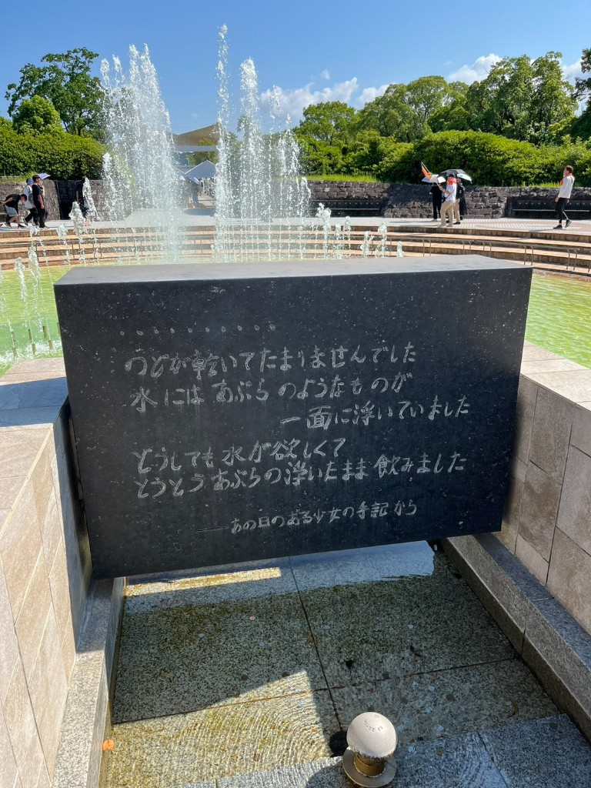

私が勤めている会社の労働組合の上部団体の企画で、長崎で行われた原爆被害の勉強会とピースウォークに参加しました。
被爆者（今年で89歳）の方のお話は聞くのが辛くなるほど生々しく、原爆被害の凄惨さを改めて実感しました。
爆心地は4,000℃に達したと見られ、その温度では人間が一瞬で蒸発するそうです…。
核兵器の恐ろしさ、製造することの愚かさを後世へ語り継いでいく必要性を強く感じました。
現在も1万を超える核兵器が世界中に存在することも大変恐ろしいです。
ピースウォークでは、平和記念像、如己堂・永井隆記念館、浦上天主堂、長崎原爆資料館などを歩いて巡り、今もなお残る原爆の爪痕を肌で感じました。
二度と犯してはいけない人間の過ちを、いま生きている我々が、次の世代だけでなく世界中へ伝えていくことが大切だと思います。